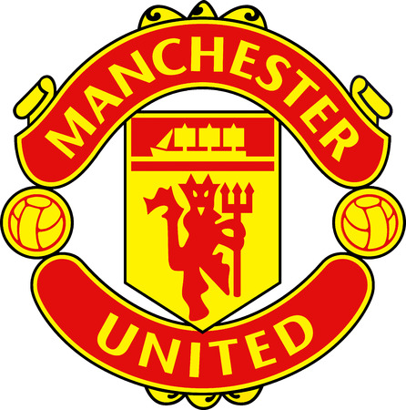

Manchester United
Manchester United Football Club, conocido como Manchester United o simplemente United, es un club de fútbol profesional inglés de la ciudad de Manchester, Inglaterra, que compite en la Premier League. Juega sus partidos como local en el estadio de Old Trafford desde 1910.
